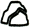
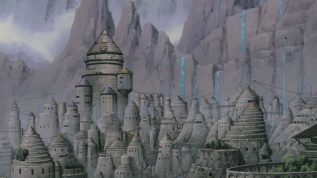
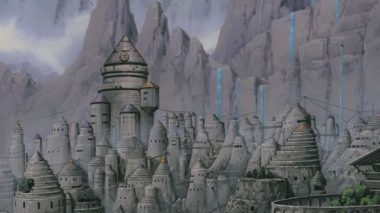

土之國
國內大半都是荒涼岩壁，國內的岩石像是沿著國境存在著，因此阻擋了土之國與其他國家的交通。另外，北方吹來的風會越過高山，將國內細小岩石吹到其他國家，名為「岩石雨」的自然現象非常有名。土之國的忍者村是岩忍者村。
 岩忍者村
是屬於土之國的忍者村，忍者五大國之一，首領被稱為土影。忍者村被許多岩石高山包圍，村內忍者擅長土遁之術，在第三次忍者大戰時曾與木葉忍者村大戰。曉的地達羅是岩忍者村的叛忍。


國內大半都是荒涼岩壁，國內的岩石像是沿著國境存在著，因此阻擋了土之國與其他國家的交通。另外，北方吹來的風會越過高山，將國內細小岩石吹到其他國家，名為「岩石雨」的自然現象非常有名。土之國的忍者村是岩忍者村。
是屬於土之國的忍者村，忍者五大國之一，首領被稱為土影。忍者村被許多岩石高山包圍，村內忍者擅長土遁之術，在第三次忍者大戰時曾與木葉忍者村大戰。曉的地達羅是岩忍者村的叛忍。
